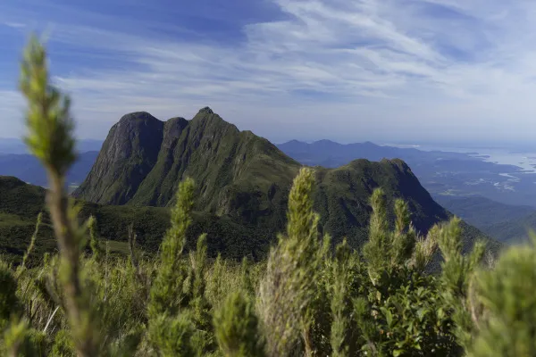

Historia do Paraná
Paraná é um estado brasileiro que integra a região Sul do país. É um grande produtor de grãos, e abriga o maior porto graneleiro da América Latina, o porto de Paranaguá.
O Paraná é um estado brasileiro localizado na região Sul do país. Possui clima predominantemente subtropical úmido e um relevo planáltico, com as maiores elevações concentrando-se no leste do estado. Sua economia é a quinta maior do país, destacando-se a indústria de transformação e a produção de grãos. No litoral paranaense fica o maior porto graneleiro da América Latina, o porto de Paranaguá."No oeste, por sua vez, na fronteira com o Paraguai, está situada a usina de Itaipu.
Com a maior parcela do seu território localizada abaixo do Trópico de Capricórnio, o clima predominante do Paraná é o Subtropical Úmido. As temperaturas mais elevadas ficam em torno de 22 ºC, enquanto a mínima pode chegar a 14 ºC. As principais variações locais acontecem no litoral, mais quente e úmido, e nas áreas serranas e porções mais elevadas dos planaltos, onde predominam temperaturas mais baixas.
Os índices pluviométricos variam entre 1500 mm e 2500 mm. Algumas áreas do estado experimentam a ocorrência de geadas durante o outono e o inverno
Relevo do Paraná
O Paraná pode ser dividido em quatro unidades morfoesculturais. No oeste do estado, situado na bacia sedimentar do Paraná, fica o terceiro planalto paranaense, cuja altitude média é de 170 metros. O terreno se eleva do segundo planalto, cuja média altimétrica supera os mil metros. Logo na sequência, está o primeiro planalto e a unidade da serra do Mar, que antecede a planície litorânea.
O pico mais elevado do Paraná e da região Sul é o pico Paraná, no leste do estado, com 1877 metros.
Vegetação do Paraná
A maior parte do Paraná está inserida no bioma Mata Atlântica. Sua cobertura vegetal é formada principalmente por florestas estacionais e ombrófila mista. Nesta última se encontra parte do domínio das araucárias. No leste do estado, onde fica a serra do Mar, situam-se as florestas densas.
Hidrografia do Paraná
Intensamente drenado, o estado do Paraná é parte de duas regiões hidrográficas: a do Atlântico Sul e a do Paraná, em que está inserido o rio de mesmo nome e cujas águas servem de força motriz para a usina de Itaipu. Destaca-se, ainda, o rio Paranapanema, tributário do rio Paraná, e o rio Iguaçu, sendo os três os cursos mais extensos do estado.
Mapa do paraná
Demografia do Paraná
Conforme as estimativas do IBGE para 2020, o Paraná possui mais de 11 milhões de habitantes, constituindo o quinto estado brasileiro em população e o mais populoso da região Sul. A maior parcela dessa população vive nas cidades, sendo a taxa de urbanização de 85,3%, conforme o Censo de 2010.
A capital, Curitiba, é o município mais populoso do estado, com 1.948.626 habitantes. Entre as capitais brasileiras, ela representa a oitava maior população. O segundo município paranaense com maior concentração de habitantes é Londrina, com 575.377.
Diversas etnias compõem a população paranaense, fruto dos intensos fluxos migratórios que tiveram o estado como destino. Destaca-se a presença de alemães, árabes, espanhóis, holandeses, italianos, japoneses, poloneses, ucranianos, portugueses, africanos bem como dos povos indígenas. Ao todo, a população paranaense é formada por 28 diferentes etnias.